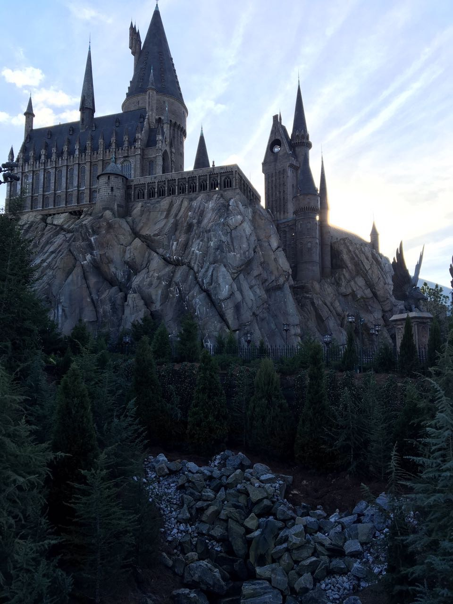

La llegada a Hogsmeade

Situada a los pies del castillo de Hogwarts se encuentra la fantástica villa de Hogsmeade, donde pude pasear por las calles y explorar todas sus fascinantes tiendas y restaurantes. Recorri los salones de clase y los pasillos de Hogwarts e incluso pude volar sobre el castillo con Harry Potter a bordo de la innovadora atracción, Harry Potter and the Forbidden Journey.
El castillo de Hogwarts